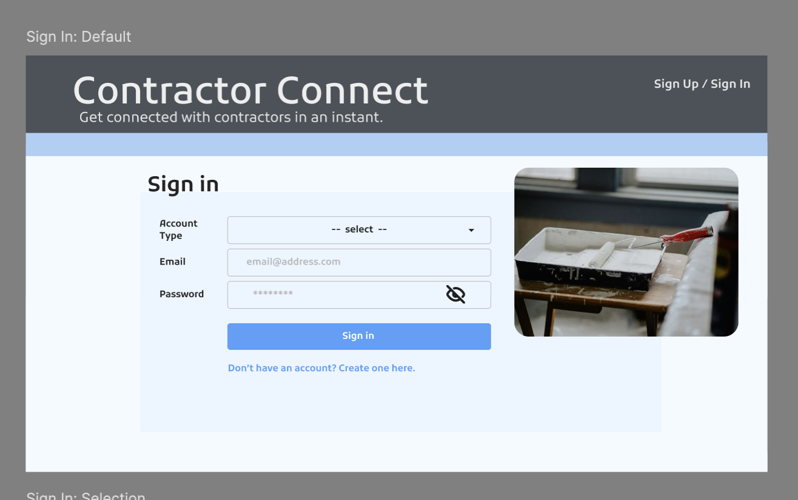
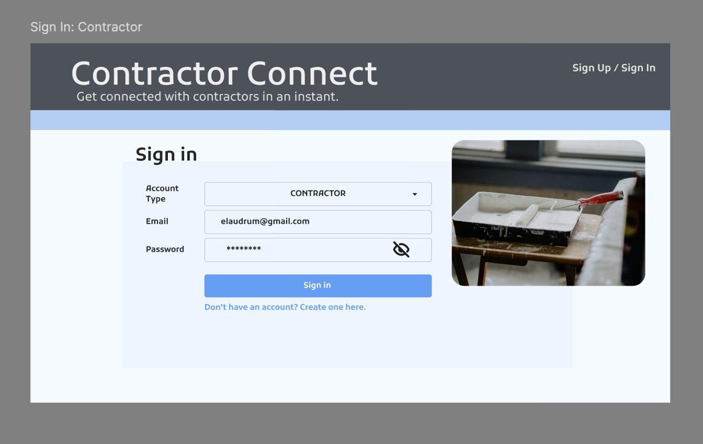
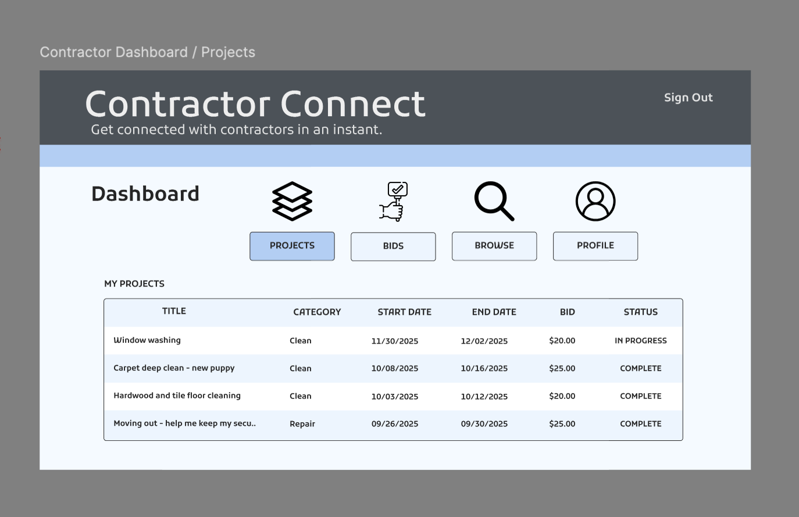
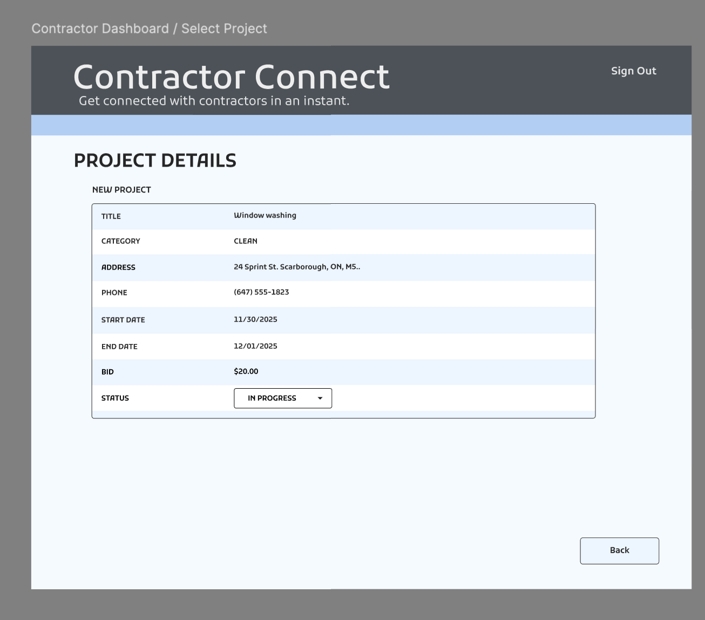
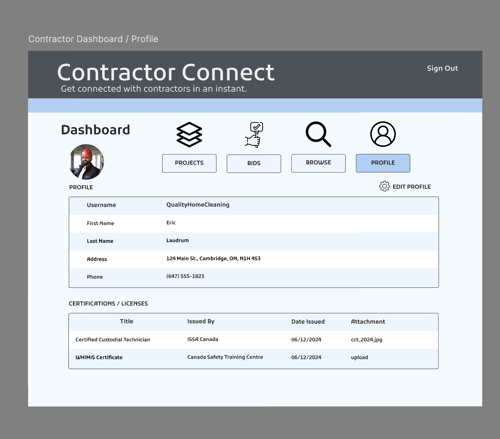

Wireframes/Mockups
This section presents the wireframes and mockups created for Contractor Connect. These designs were used during the planning stage to organize the layout, navigation, and main user flows before full implementation.
The mockups focus on key parts of the platform, including sign in, contractor dashboard features, project details, and user profile management. Together, these screens helped the team visualize how users would interact with the system.
Sign In – Default
This mockup shows the default sign-in page layout with account type selection, email and password fields, and a clean landing design.

Sign In – Contractor
This screen shows the contractor sign-in version with the contractor role selected and the same form structure prepared for user access.

Contractor Dashboard / Projects
This mockup presents the contractor dashboard where users can view current projects, bids, browsing options, and profile access.

Project Details
This screen shows a project details page where contractors can review job information such as title, category, address, dates, bid, and status.

Contractor Profile
This mockup displays the contractor profile page with user information, dashboard navigation, and certification or license details.
